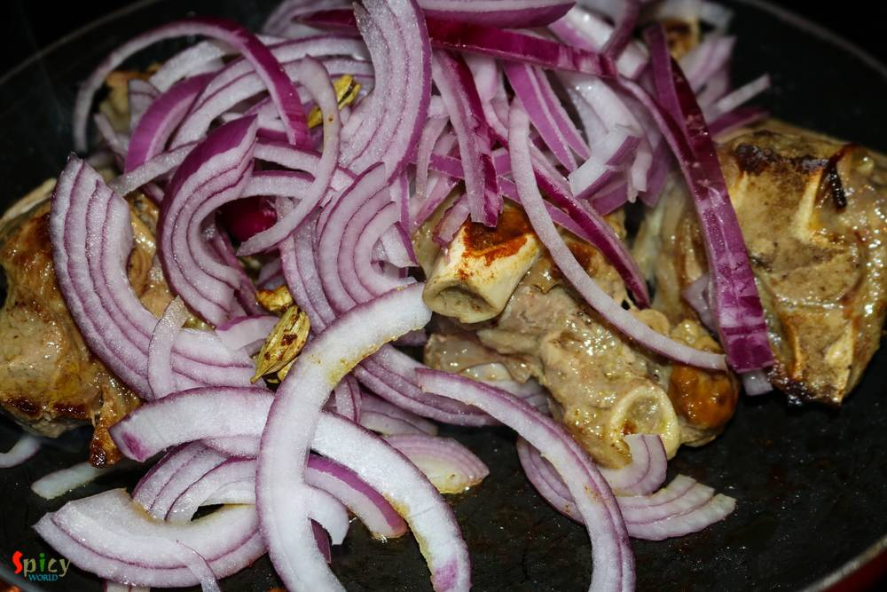

Simple and Easy Recipes
Peshawari Mutton
© 2016 Spicy World, Published on: Jul 20, 2016
Pakistani cuisine is full of delicious surprises. Their cuisine is lot more than just kababs and biriyani. I was searching for a different 'goat meat' recipe and suddenly came across with this delicious 'peshawari mutton' recipe. Don't know whether the cooking process is authentic or not, but I really fell for its simplicity. This dish doesn't require too many ingredients even though surprisingly it tastes unforgettably delicious. You can tell from the pictures that the gravy looks fantastic ! Try this in your kitchen and enjoy a great meal with your loved ones.

Ingredients
- 1 kilo goat meat.
- 1 big onion, thinly sliced.
- 1 Teaspoon of ginger and garlic paste.
- Whole spices (3 green cardamom, 2 bay leaves, 5 cloves).
- 2 Tablespoons of curd / yogurt.
- Salt and sugar.
- Spice powder (1 Teaspoon of hot red chilli powder, 1 Teaspoon of garam masala powder, Half Teaspoon of nutmeg, Half Teaspoon of mace powder).
- Few drops of rose water / kewra water.
- Half cup of brown onion / beresta.
- A cup of milk.
- 4 green chilies.
- 4 Tablespoons of oil.
- Water.


Steps
Heat the oil in a pan.
Fry the mutton pieces for 5 minutes.
Then add the onion slices, pinch of salt and all of the whole spices. Mix well and cook for 15 minutes.
Add the fresh ginger and garlic paste, pinch of sugar. Cook for 5 minutes.
Then lower the flame and add the beaten curd, salt and all of the spice powder. Mix very well for 4 minutes.
When the oil will start oozing out, add a cup of milk, 1/4th cup of warm water, green chilies and the brown onion. Mix well and cook until the meat becomes soft.
After that, turn off the heat and sprinkle few drops of rose water / kewra water and cover the pan for 5 minutes. Then garnish it with some more brown onion.
Your peshawari mutton is ready ...
Serve this hot with pulao, rice, roti, paratha or naan ...
")